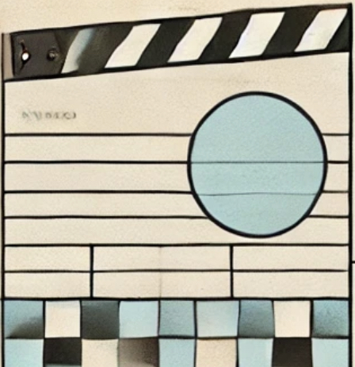

Contact info
email richandrewsfl[AT]gmail[DOT]com
linkedin richandrewsfl
Projects

Sora & The Web
Studying How OpenAI Showcases Sora Videos On The Web
I love technology and currently direct corporate development at ANDMORE
Athletics & learning new things is lifelong pursuit for me.
A West Palm Beach, Flordia native & Florida Atlantic University graduate (MS) in Information Technology & Operations Management.